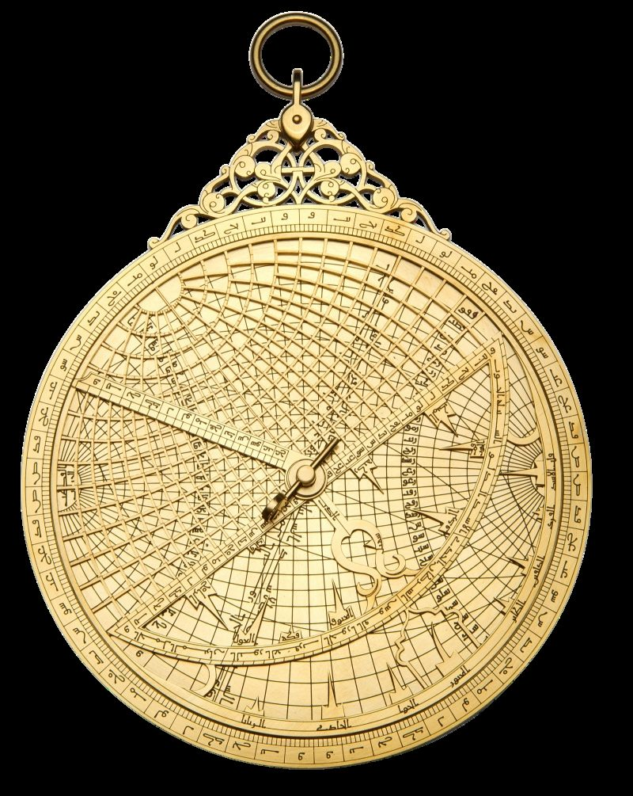
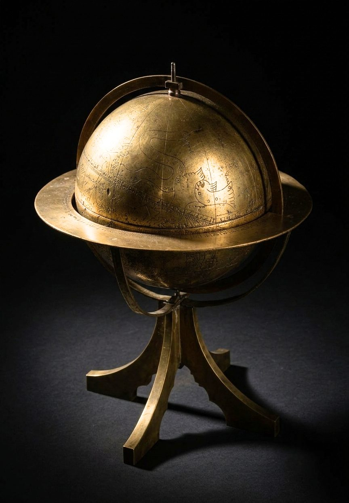
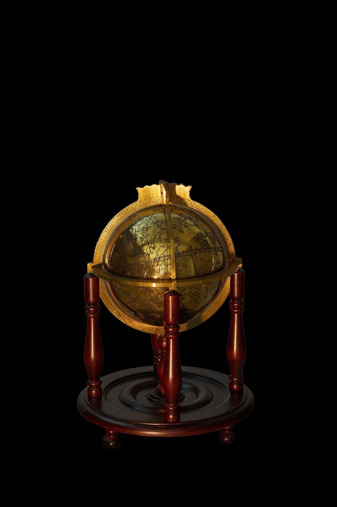
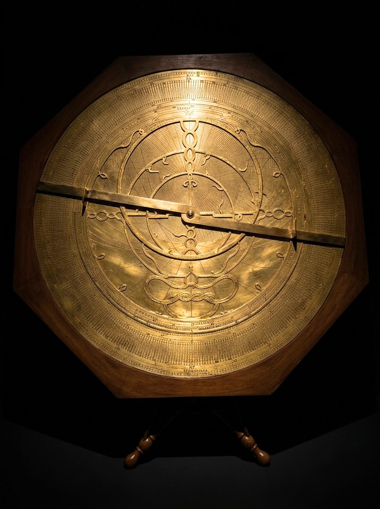
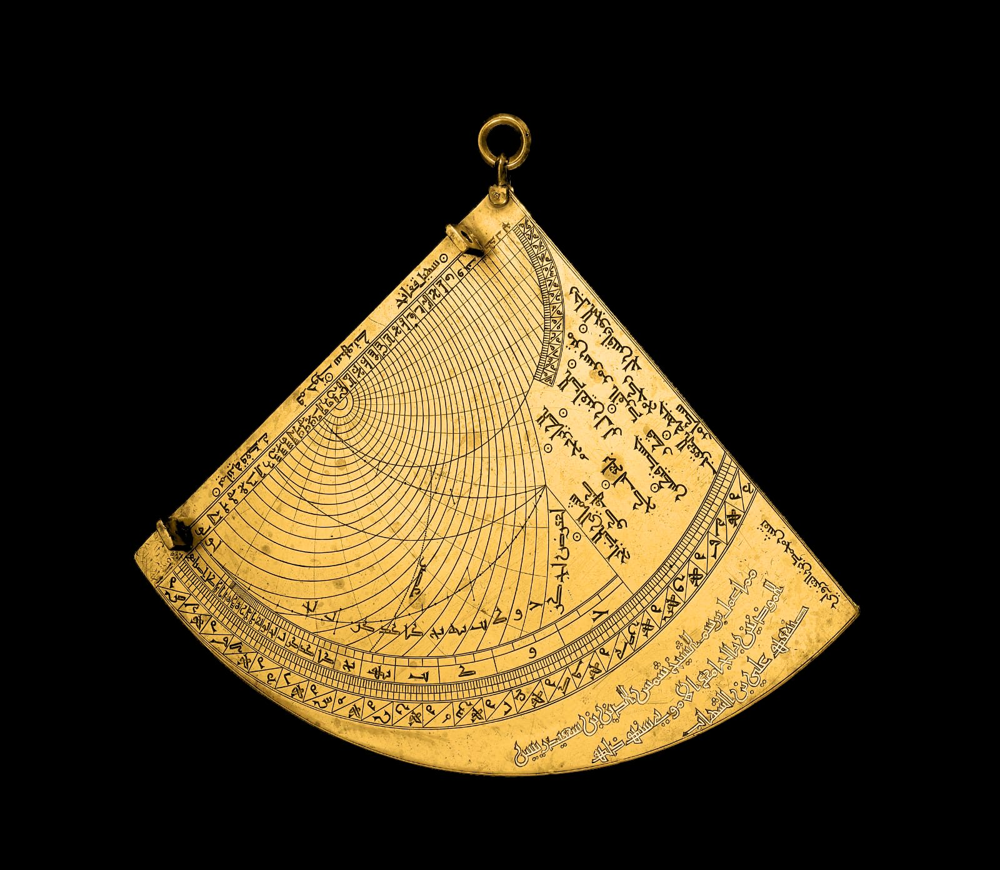
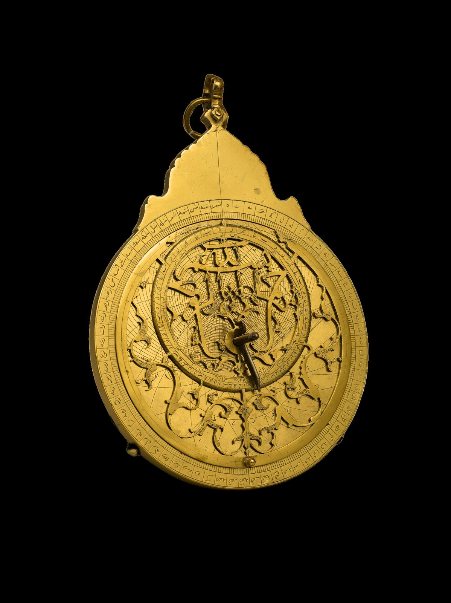

Todas las Obras
La colección completa
14 piezas en exhibición. Filtre por categoría a continuación.

Obras Monumentales
Casco y Escudo Ceremonial de Mehmed el Conquistador

Regalos de Colección
Set Miniatura Otomano de Escudo, Casco y Testera de Caballo

Regalos de Colección
Remate de Estandarte Sagrado — Modelo de Mesa del Complejo Ahmet Yesevi

Piezas de Nivel Museístico
Reloj de Sol Universal de Mehmed el Conquistador

Piezas de Nivel Museístico
Astrolabio de Ulugh Beg

Piezas de Nivel Museístico
Astrolabio Universal (Serraciye)

Piezas de Nivel Museístico
Astrolabio Coreano (Bay Togiya)

Piezas de Nivel Museístico
Astrolabio del Sultán Bayezid II

Piezas de Nivel Museístico
Astrolabio del Sultán Bayezid II (II)

Piezas de Nivel Museístico
Globo Celeste Andalusí de Sahli

Piezas de Nivel Museístico
Globo Celeste de Al-Sufi

Piezas de Nivel Museístico
Astrolabio de Galileo (Danti)

Piezas de Nivel Museístico
Tablero de Cuadrante (Cuadrante de Astrolabio)

Piezas de Nivel Museístico